This level introduces stream ciphers — a class of encryption where a pseudo-random keystream is generated and XOR’d (or added mod 26 in this alphabet-based variant) with the plaintext one byte at a time. The keystream is produced by an 8-bit Linear Feedback Shift Register (LFSR), a simple hardware circuit that cycles through states deterministically. Because an 8-bit LFSR has only 256 possible states, its output is periodic — it must repeat within 256 steps. The core weakness exploited here is the known-plaintext attack: by encrypting a message consisting entirely of the letter A (value 0 in the cipher’s alphabet), the ciphertext equals the keystream directly (plaintext + keystream mod 26 = 0 + keystream = keystream). Once the keystream is recovered and its repeating period identified, any ciphertext encrypted with the same key can be decrypted by subtracting the keystream values mod 26.
🎯 End Goals
Understand the stream cipher model and the LFSR weakness described in the hints
Use the encrypt6 binary to perform a known-plaintext attack and recover the keystream
Identify the period of the repeating keystream (30 letters)
Use the recovered keystream to decrypt the krypton7 password ciphertext
SSH into krypton7 using the decoded password
🪜 Steps to Reproduce
SSH into krypton6, navigate to /krypton/krypton6/, and read the README and hints
Explore the onetime/ subdirectory to examine the provided plain1 and cipher1 files
Create a working directory in /tmp, symlink the keyfile, and set permissions
Generate a 300-byte known plaintext of all A’s and encrypt it twice to confirm the keystream is deterministic
Analyze the hexdump to identify the keystream’s repeating period (30 letters)
Extract the 30-letter keystream cycle and decrypt the krypton7 ciphertext using plaintext = (ciphertext − keystream) mod 26
SSH into krypton7 using the recovered password
🧠 Analysis
Step 1 — Navigate and read level files
Logged in as krypton6. Ran ls -la in /krypton/krypton6/ to list files: encrypt0, HINT1, HINT2, keyfile.dat, krypton7, README, and a onetime/ subdirectory. Ran cat README which explained the level: frequency analysis defeats repeating-key substitution ciphers, so good encryption must make ciphertext appear random. The README introduced stream ciphers — each plaintext byte is encrypted with a corresponding byte from a pseudo-random keystream. An encrypt6 binary is available that uses the keyfile to generate the keystream and encrypt any input. The password for krypton7 is encrypted with the same mechanism. The README also hinted that using plain language as a plaintext is a weakness — suggesting a known-plaintext attack — and pointed to HINT1 and HINT2 for further guidance.
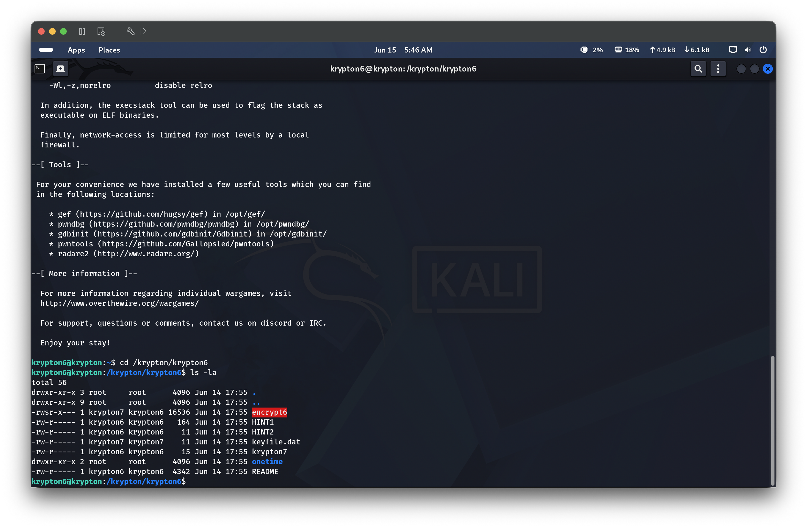
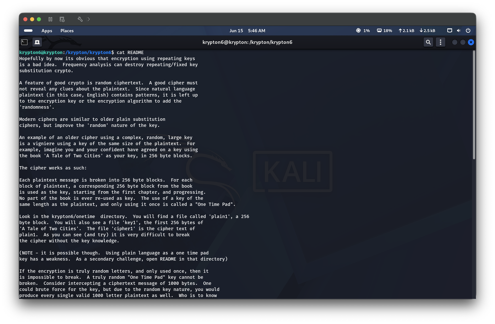
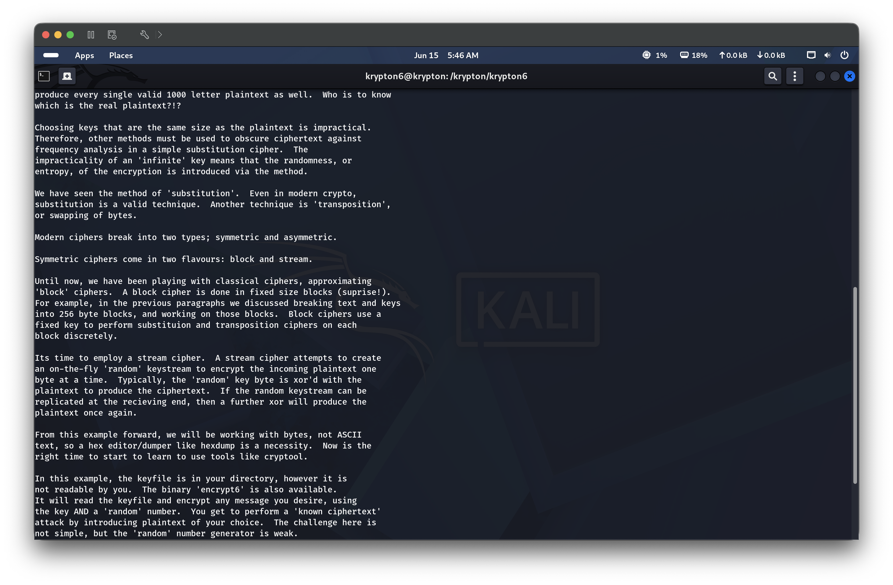
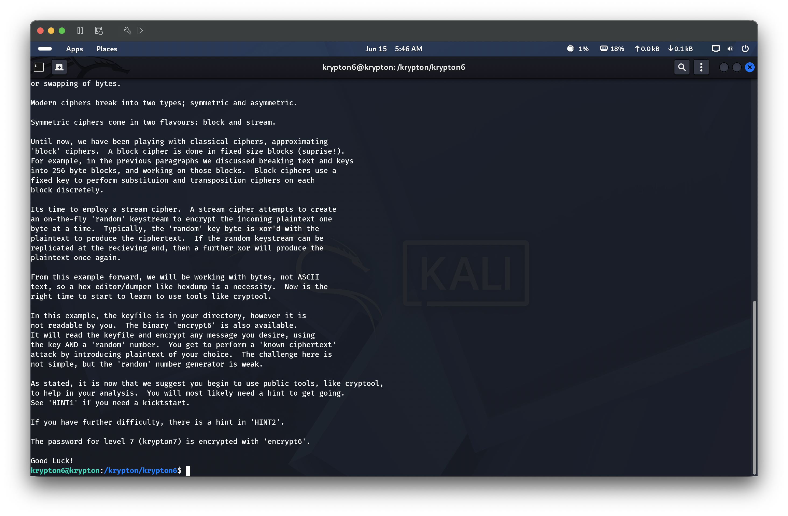
Step 2 — Read the hints
Ran cat HINT1 which revealed: “The random generator has a limited number of bits, and is periodic. Entropy analysis and a good look at the bytes in a hex editor will help. There is a pattern!” Ran cat HINT2 which gave the critical clue: 8 bit LFSR. An 8-bit Linear Feedback Shift Register has only 256 possible internal states — meaning the keystream must repeat within 256 bytes. The pattern is therefore findable by examining the raw keystream bytes.
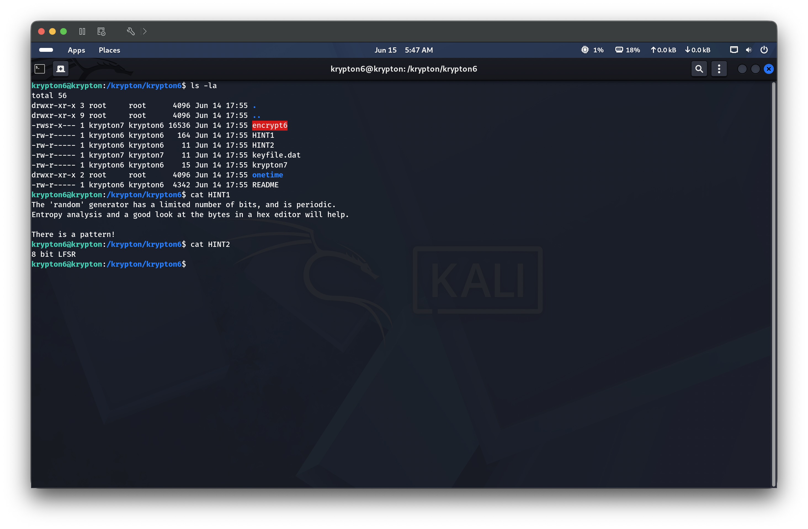
Step 3 — Explore the onetime directory
Ran cd onetime/ and ls -la to inspect the provided files: cipher1 (256 bytes) and plain1 (256 bytes). Ran cat plain1; echo which showed the plaintext was 300 copies of the letter A — confirming that a known-plaintext scenario is already set up. Ran cat key1; echo to inspect the raw keystream, and cat cipher1; echo to see the corresponding ciphertext. Since plain1 is all A’s (value 0), the ciphertext equals the keystream directly.
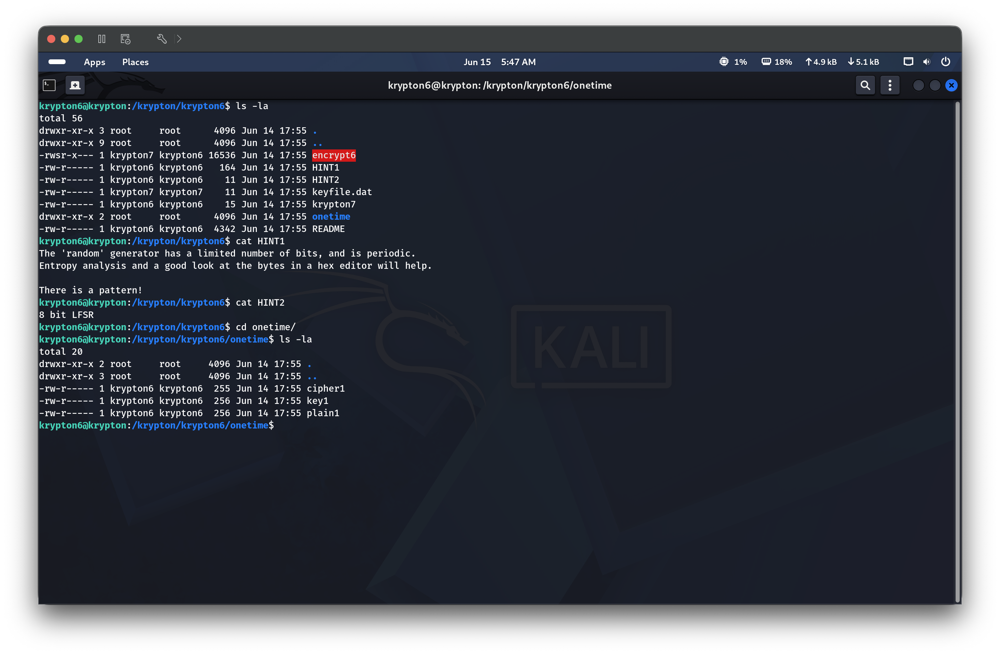
Step 4 — Set up working directory and symlink keyfile
Ran mktemp -d to create a temporary working directory (e.g. /tmp/tmp.SnVxnjsWkb). Changed into it with cd /tmp/tmp.SnVxnjsWkb. Symlinked the keyfile with ln -s /krypton/krypton6/keyfile.dat keyfile.dat so the encrypt6 binary can find it. Ran chmod 777 . to allow the setuid binary to write output files. Confirmed the setup with ls -la showing the symlink and directory permissions.
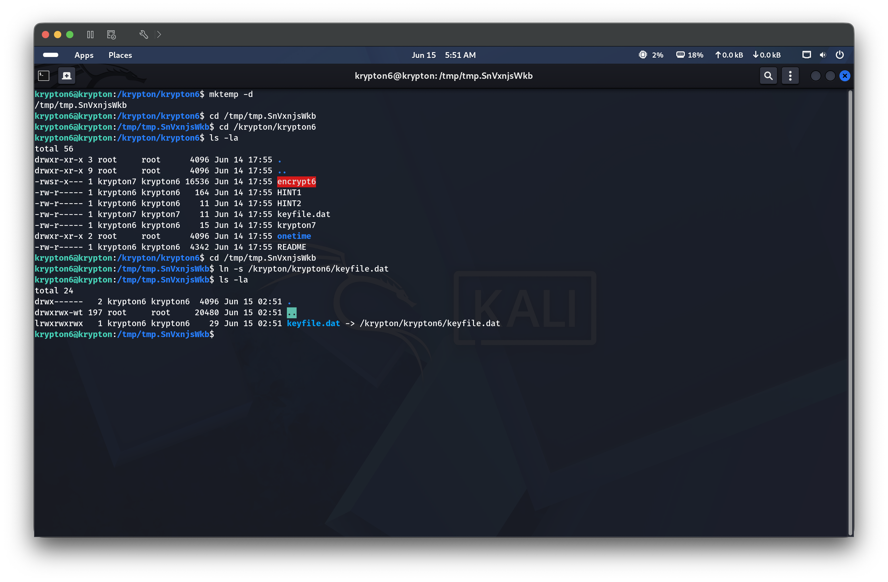
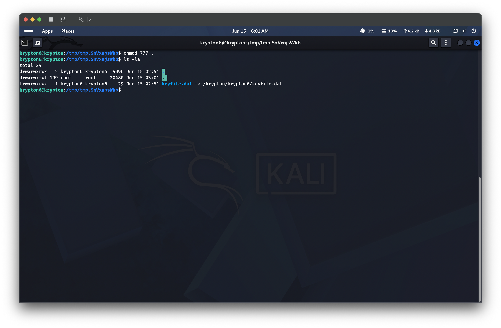
Step 5 — Generate known plaintext and confirm deterministic keystream
Ran python3 -c 'print("A"*300, end="")' > knownA.txt to create a 300-byte file of all A’s. Ran /krypton/krypton6/encrypt6 knownA.txt out1.bin then xxd out1.bin to inspect the hexdump of the encrypted output. Since the plaintext is all A’s (value 0), the ciphertext equals the keystream. Ran encrypt6 knownA.txt out2.bin and xxd out2.bin a second time — the hexdumps of out1.bin and out2.bin were byte-for-byte identical across all 300 bytes (offsets 00000000 through 00000120). This confirmed the keystream is completely deterministic: the LFSR always produces the same sequence from the same starting state.
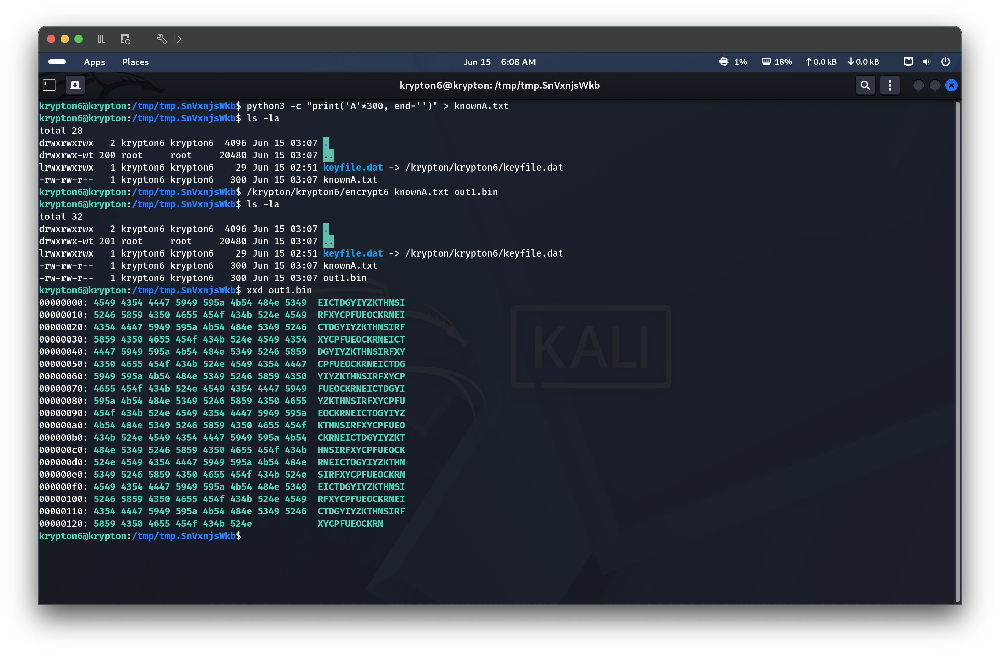
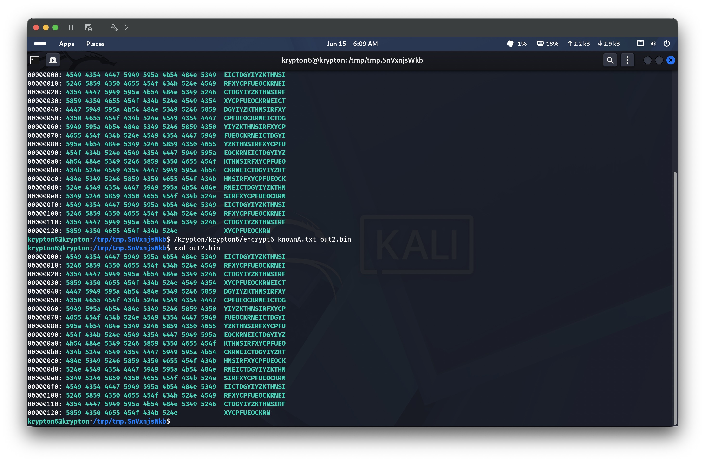
Step 6 — Identify keystream period and derive the keystream cycle
Asked Claude to analyze the hexdumps and find the repeating period. Claude observed that row 00000000 (EICTDGYIZKTHNSIRFXYCPFUEDCKR) is identical to row 000000F0 in the first dump — a gap of 240 bytes. However, checking letter-by-letter, the actual repeat unit is smaller: the sequence repeats every 30 letters. Extracting the first 30 letters and converting each to its numeric value (A=0, B=1, …, Z=25):
This 30-value list is the full keystream cycle produced by the 8-bit LFSR.
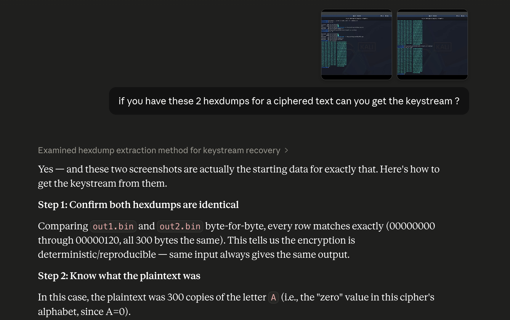
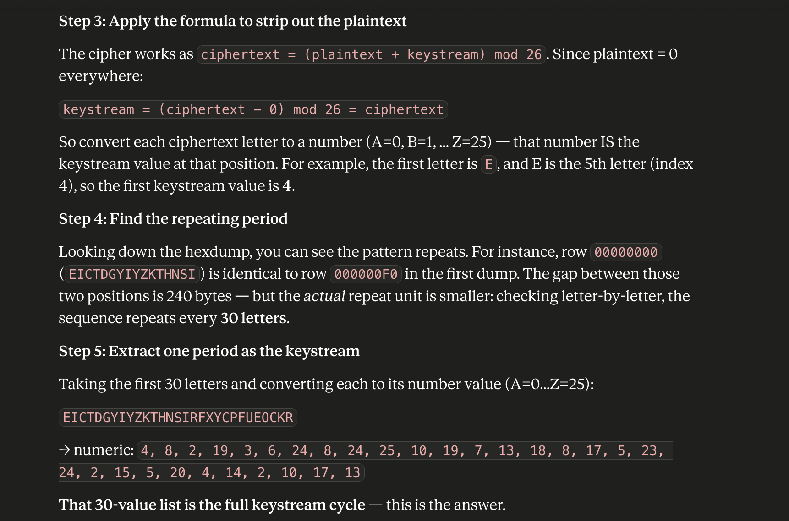
Step 7 — Decrypt the password
Asked Claude to decrypt the krypton7 ciphertext PNUKLYLWRQKGKBE using the recovered keystream cycle, applying plaintext = (ciphertext − keystream) mod 26 letter by letter:
Pos
Cipher
C-val
Key
C−K mod 26
Plain
1
P
15
4
11
L
2
N
13
8
5
F
3
U
20
2
18
S
4
K
10
19
−9→17
R
5
L
11
3
8
I
6
Y
24
6
18
S
7
L
11
24
−13→13
N
8
W
22
8
14
O
9
R
17
24
−7→19
T
10
Q
16
25
−9→17
R
11
K
10
10
0
A
12
G
6
19
−13→13
N
13
K
10
7
3
D
14
B
1
13
−12→14
O
15
E
4
18
−14→12
M
Password: LFSRISNOTRANDOM
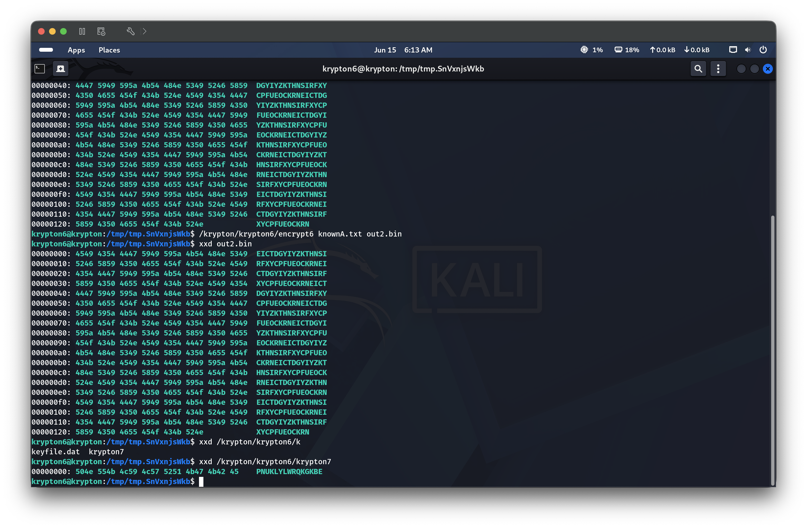
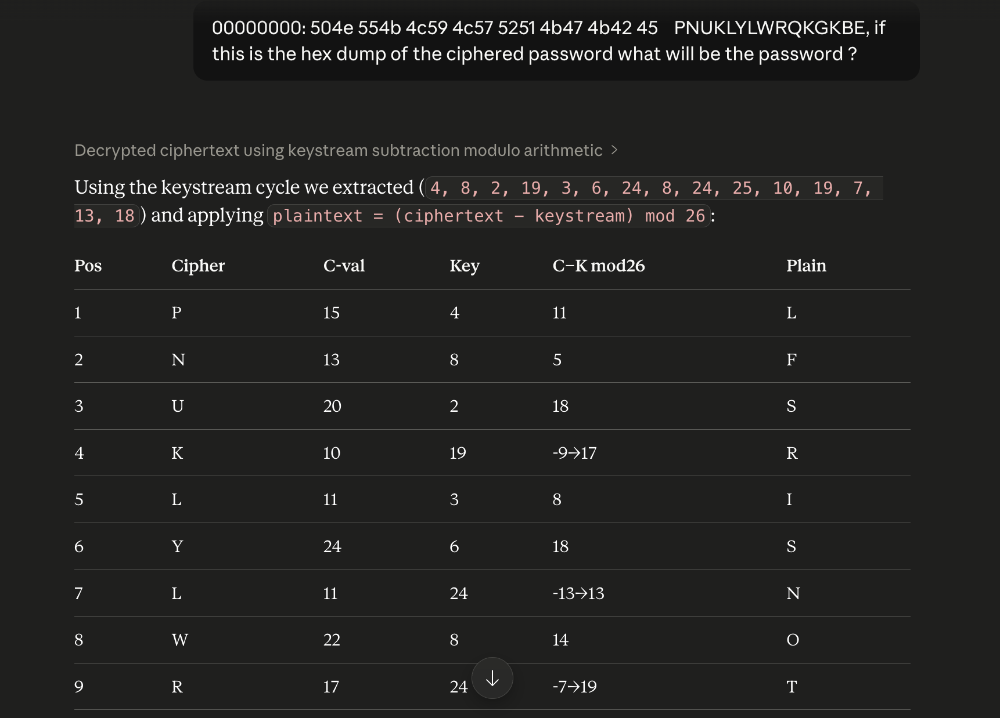
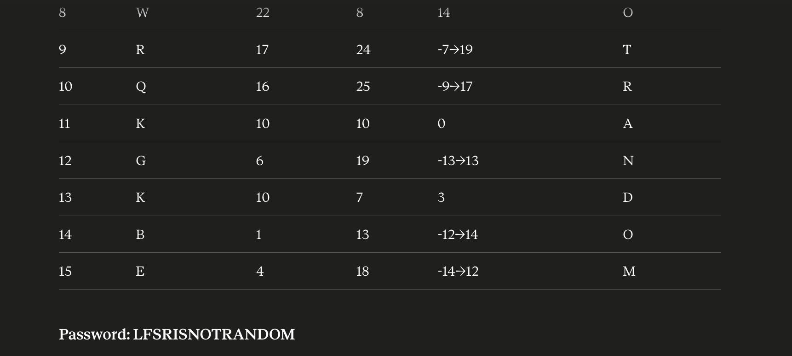
Step 8 — SSH into krypton7 with the decoded password
Ran exit to leave krypton6, then ssh krypton7@krypton.labs.overthewire.org -p 2231 and authenticated with password LFSRISNOTRANDOM. The OTW welcome banner confirmed a successful login to the krypton7 shell. Navigated to /krypton/krypton7/ and ran cat README which displayed: “Congratulations on beating Krypton!” — confirming this is the final level of the wargame.
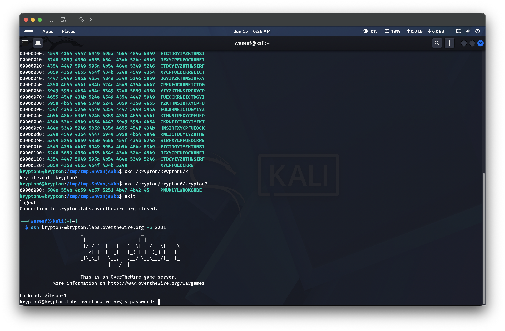
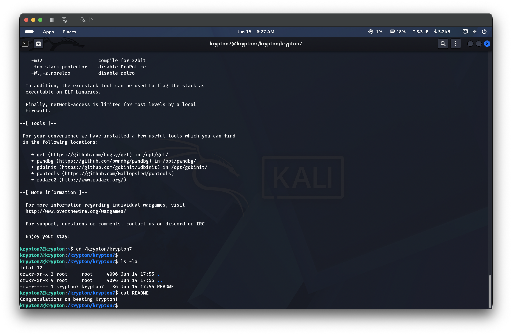
🔑 Key Concepts Learned
A stream cipher encrypts one byte at a time by adding a pseudo-random keystream value to each plaintext byte mod 26 (or XOR in binary ciphers) — producing ciphertext that looks random
An 8-bit LFSR (Linear Feedback Shift Register) has only 256 possible states, so its keystream must repeat within 256 steps — making it cryptographically weak despite appearing random
A known-plaintext attack defeats this: encrypting all A’s (value 0) yields ciphertext = keystream directly, since 0 + keystream mod 26 = keystream
The keystream period can be found by inspecting the hexdump for repeating rows — here the period was 30 letters despite 300 bytes of output (10 repetitions)
Once the keystream cycle is known, decryption is simple arithmetic: plaintext = (ciphertext − keystream) mod 26
The password LFSRISNOTRANDOM is a direct reference to the vulnerability — Linear Feedback Shift Registers are decidedly not random
This level completes the Krypton wargame — progressing from Base64 through Caesar, monoalphabetic substitution, Vigenère (known and unknown key length), and finally stream ciphers